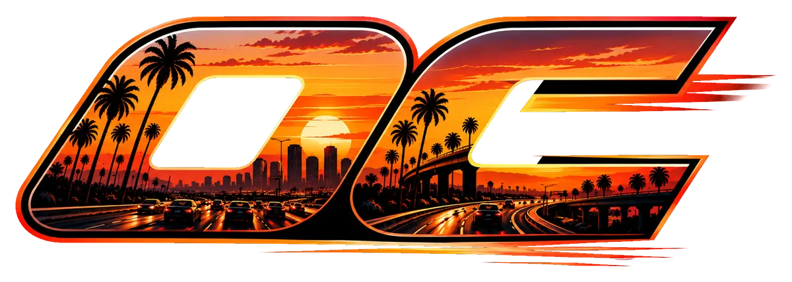

Launch kit · 16 October 2026

OC Ultra Top SpeedHow OC Ultra goes from a test build to a public Orange County launch in 90 days: $0 up front, a store that sells looks and never speed, and every step written down with who does it and how you know it worked.
The test build opens in a new tab. Its store runs in test mode: nothing is charged and no card leaves the browser.
In public posts, handles and the press kit the name is OC Ultra alone until the trademark search clears (plan step F2): "Top Speed" is already the name of another racing game. Inside the game, and on these private pages, it stays under the wordmark as designed.
Try this first
Three minutes in the test build shows the whole store working end to end. Nothing is charged: test mode only takes Stripe's test cards.
-
Open the store in the game
Open the test build. On the main menu, tap the Store card (marked Optional), or pause a drive and tap Store.
You'll see "Test mode · Nothing is charged" at the top, the free list, and the 11 items you can buy.
-
Buy the Founder Pack with 4242
Buy · $10, then your birth month and year, then any email (test mode signs you straight in and sends nothing). Tick "I'm 18 or over, or a parent or guardian has said yes".
Card 4242 4242 4242 4242, any future date, any 3 digits, then Pay $10.00 (test).
You'll see a receipt marked test mode, with an id like OCU-TEST-…, and the 12 items the pack grants.
-
See the founder paint on your car
Tap Use Founders Sunset on the receipt and drive. The car you drive wears the pearl orange: switch to the Chase camera to see it. Each car in the Garage keeps its own paint, and the Store's Your items lists everything you own.
Try a decline too: 4000 0000 0000 0002 is always declined, and nothing is added.
The kit
Each page reads top to bottom like the drive it describes, and every guide is a numbered run of steps; with JavaScript on, Next, Back and Auto-play drive it one step at a time.
The 90-day plan
Four phases on one road, the 13 weeks with the owner's and Claude's tasks side by side, the metrics and their targets, the Day 90 decision gates, and a calculator for what the store could earn against what you might spend.
- 35steps
- 13weeks
- 4gates
Marketing
The hook, the eight-week clip calendar, and step-by-step guides: shoot and post a clip, run the waitlist and invite codes, pitch the local press, and run the Founders crew with the FTC's disclosure rule.
- 3clips a week
- 416real exits
- $0budget
The store
What stays free, the 11 launch items with their prices and what's left after Stripe's fee, what comes later and why it isn't sold yet, the rules, and a test-mode checkout you can try on the page.
- 11items
- $2–10prices
- 0loot boxes
Go live
Ten steps from a fresh Supabase project to live payments, with every command and setting ready to copy and a line telling you how to know each step worked. Stop after step nine until you decide.
- 10steps
- 9in test mode
- $0a month
The honest shape
A hobby-scale launch of a free browser game for Orange County. It should cost about nothing and earn about nothing. The point is players: people in OC driving their own exit, coming back, and telling us what broke.
$0
required up front. Every paid item in the plan is optional and has a trigger: spend only when it happens.
≈$0
earned. The store brings in $0 to about $850 in 90 days, most likely under $100. The plan's calculator shows the arithmetic.
Day 46
the public OC launch: Thursday 3 December 2026, if Day 1 is Monday 19 October. Dates slide as a block if a gate fails.
Gate 0
comes first: the game must reach the menu at 30 fps or better on three phones before any post sends people to it.
The owner's first run on a real phone stopped at the loading screen. Until Gate 0 passes, posts link nowhere and ask nobody to play. The boot report and safe mode (plan step F5) are the first build job.
The store rule
The owner's decision of 16 October 2026, replacing the old "no real money anywhere". It is in the project's CLAUDE.md, so every session builds to it.
- Payments are built and stay in test mode. Nothing is charged until the owner connects Stripe and Supabase and turns live mode on.
- Sell cosmetics, expansions and support: paint, wheels, driver styles, a tip. Each item shows exactly what you get before you pay.
- Never sell power: no car faster than one you can earn, and no grip, handling, score, XP or credit boosts.
- Never sell the credits you earn by driving. No loot boxes or mystery packs. No premium currency. No ads at launch.
- Everything in the game today stays free: every freeway, mode, car, driver, ability, the radio and the weather.
- Purchases are 13+, and nothing is sold or pre-sold before it exists in the game.
Builds: code, these pages, copy drafts, clips and run cards, triage of feedback, the weekly report. Never holds the owner's passwords or live keys.
Holds the accounts and keys, posts, goes to meets, talks to players, and makes every decision. About 8 hours a week at first, 15 in launch week, 4 to 6 after.